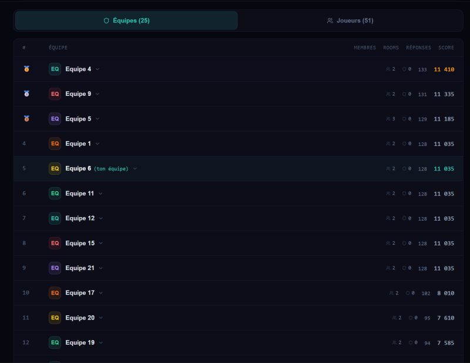

Projet
CTF Red / Blue Team — Ynov Campus
Un exercice de sécurité grandeur nature conçu pour faire travailler ensemble des étudiants de 1ère et 2ème année, chacun incarnant un rôle complémentaire sur un même incident.
Le principe : deux rôles, un seul incident
L'objectif était de faire travailler ensemble des étudiants de 1ère et de 2ème année sur un même incident de sécurité, avec un binôme Red Team / Blue Team qui suit la même chronologie des deux côtés du miroir.
L'un joue l'attaquant et progresse dans le système d'information ; l'autre joue l'analyste SOC et doit détecter, corréler et comprendre cette progression à partir des journaux et des alertes. Les deux binômes s'entraident : l'un explique comment l'attaque avance, l'autre comment la détection se construit.
Architecture réseau du scénario
Un système d'information simulé avec DMZ, poste utilisateurs, contrôleur de domaine et zone SecOps dédiée à la supervision.
Chemin d'attaque, étape par étape
Timeline de l'incident
Jeudi 7 mai 2026 — la chronologie complète, telle que reconstituée par les deux équipes.
Reconnaissance & intrusion web
08:00 Lancement de la reconnaissance sur l'extranet du campus depuis Internet
Pivot interne & ingénierie sociale
09:03 Première tentative de connexion SSH vers wkst-1 (webmaster)
Phishing & post-exploitation
11:24 Céline ouvre le mail, télécharge la pièce jointe et active la macro
Vol de données & exfiltration
12:18 Identifiants FTP découverts en clair dans les dossiers de Céline
Élévation & ransomware
13:14 Hash management-svc cassé hors ligne
Détection & réponse
14:50 Céline constate ses fichiers chiffrés et alerte l'équipe informatique
La plateforme du CTF
Le CTF s'est déroulé sur une plateforme dédiée : classement en direct, épreuves de web, cryptographie, forensic et pwn, dans la peau d'analystes enquêtant sur le piratage du campus.
Voir la plateforme du CTF →Mon post LinkedIn
